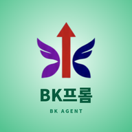

BK프롬
🔗 BK프롬 주소 · QR코드 보내기
카톡에 주소만 보내거나, QR코드 이미지를 보내 주세요.
🛠 관리자 메뉴 (만든 사람용 · 백업)
지금 버전: …
지금 사이트에 올라가 있는 프로그램 파일 전체를 날짜가 붙은 압축파일 하나로 휴대폰에 저장해요. 새 파일을 올리기 전에 꼭 한 번 눌러 두세요. (내가 저장한 프롬프트·사진 백업은 맨 위 ‘💾 데이터 백업’이에요)
🔗 관리용 주소
① 파일 올리기: github.com/bangkeukryul/bk-prom/upload/main
② 저장소(파일 목록·변경 기록): github.com/bangkeukryul/bk-prom
③ 관리자 메뉴 켜기: bangkeukryul.github.io/bk-prom/?bkadmin
④ 앱 주소(공유용): bangkeukryul.github.io/bk-prom
🚑 업데이트 후 문제가 생기면 (되돌리기)
- 내 파일 → 다운로드에서 문제가 생기기 전 날짜의 BK프롬_백업_날짜.zip을 길게 눌러 압축 풀기.
- github.com/bangkeukryul/bk-prom/upload/main → choose your files → 그 폴더의 파일을 모두 선택 (백업안내.txt 는 빼도 돼요) → Commit changes.
- 1~2분 뒤 앱을 닫았다가 두 번 열면 예전 버전으로 돌아와요.
저장한 내용은 이 휴대폰(이 브라우저) 안에만 있어요. 어디에도 올라가지 않아요.
크롬의 ‘사이트 데이터 삭제’를 하면 함께 지워지니 가끔 💾 데이터 백업을 해 두세요.